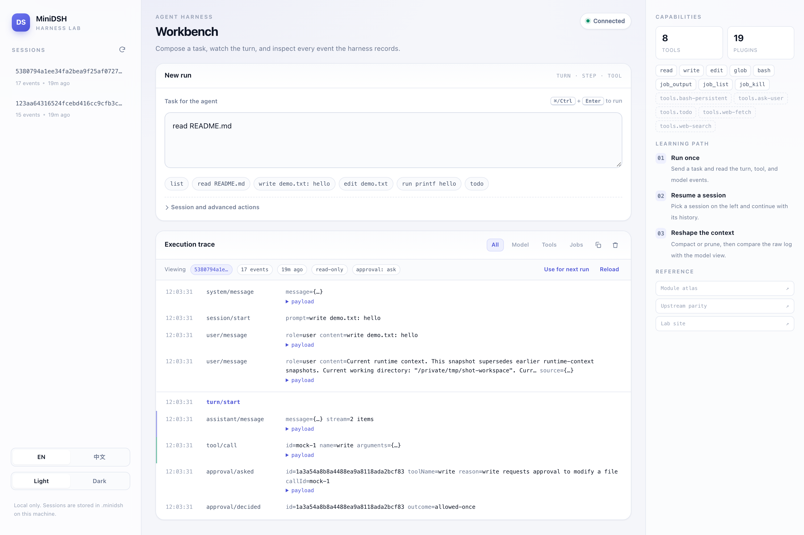

Services, not globals
Everything is a plugin that provides and requires named services. Disable a feature and its service, tool schema, and prompt section all disappear together — no special cases, no dead instructions.
MiniDSH is a working agent harness in about 12,000 lines of Python: plugin kernel, agent loop, tool registry, permission stack, event-sourced sessions, subagents, workflows, MCP, skills, scheduling, goals, and programmatic tool calling. Every layer can be switched off, observed, and verified on its own.
MiniDSH optimizes for the opposite. Three rules make the whole harness inspectable — and make every failure explainable.
Everything is a plugin that provides and requires named services. Disable a feature and its service, tool schema, and prompt section all disappear together — no special cases, no dead instructions.
The session log is append-only and immutable. What the model sees is a derived view that can be compacted, pruned, or replaced. The audit trail never shrinks.
Missing approver, unknown flag, corrupted session, missing preset, oversized payload — every one stops the operation with an explicit error instead of degrading silently.
CLI, HTTP workbench, and Desktop share a single Application. Below it, every capability is a service resolved from the same context.
run · resume · serve
sessions · surface · stream
HTTP + SSE host
web/index.html workbench
pywebview shell
optional dependency
app.py — the only assembly point
flags → dependency order
activate / deactivate
one provider per name
optional resolution
turn / step / tool call
cancellation · budget
immutable generations
surface · compaction
sandbox policy · approval
observations · seatbelt
jobs · PTY · subagents
workflow · run_code
MCP · skills · presets
schedule · goals
deterministic · offline
EN + 中文 grammar
SSE · thinking replay
retry · images · Files API
Twenty-five switchable layers. Each card is one capability: what it implements, whether it is on by default, and a command that proves it works.
Read top to bottom the first time. Each layer names the module and the question it answers.
Small on purpose, but the seams line up with how production agent platforms converged. Each row is a place to compare the lab with the current answer.
| Practice | In this repo | What it teaches |
|---|
The local workbench renders a structured trace: model events, tool calls, approvals, file observations, and job lifecycle — with live streaming text, English/中文 switch, and light/dark themes.


No API key, no network, no third-party packages. The deterministic mock model makes every trajectory reproducible.
# clone and install (stdlib only) git clone https://github.com/NorwinYu/dsh-python-lab.git cd dsh-python-lab && python3 -m venv .venv && . .venv/bin/activate python3 -m pip install -e . # what does the model actually see? minidsh plugins minidsh tools minidsh prompt # run the offline agent minidsh run "read README.md" --trace # widen the policy, then approve the write minidsh --sandbox-mode workspace-write --yes \ run "write demo.txt: hello" # open the workbench minidsh serve --port 3080 # http://127.0.0.1:3080
minidsh session, surface, and stream show raw events, the model view, and recorded chunks.DEEPSEEK_API_KEY, disable llm.mock, enable llm.deepseek. Keys are read from the environment only.A lab that hides its limits is a demo. These are stated up front and tracked bullet by bullet in the parity report.
English and Chinese guides, a module atlas, runnable labs, and an honest upstream parity report.